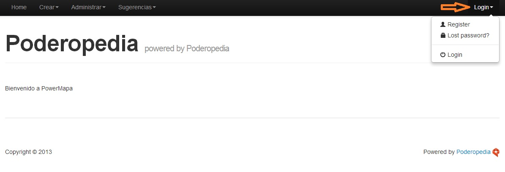

To enter to the Poderopedia management platform you must first register.
On the right side of the website you will find the LOGIN menu where you will see the options Register, Lost Password and Login (Fig 01)
(Fig.01)
